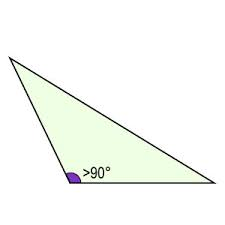

El triangulo obtusangulo se caracteriza por tener uno de sus angulos interiores obtuso, eso quiere decir que el angulo es mayor a 90°, por lo tanto, los ángulos internos restantes son menores a 90°.